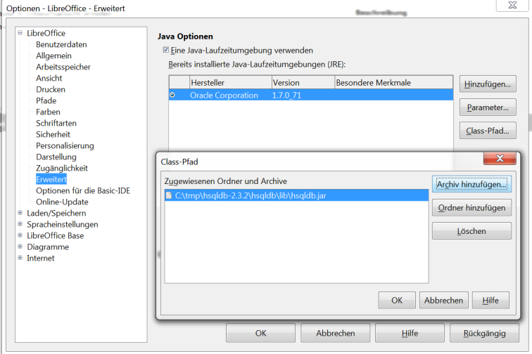
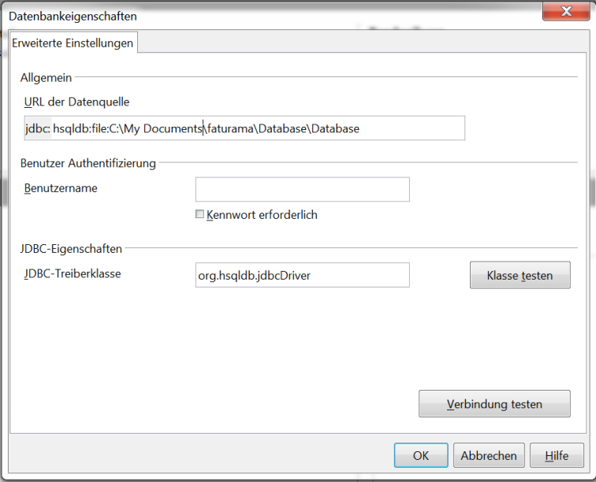

Verbindung zu Datenbank mit Base
Verbindung zu Datenbank von Fakturama mit
OpenOffice.org/LibreOffice Base kann vorteilhaft sein,
wenn man erweiterte Datenbankabfragen durchführen will.
hsqldb in OpenOffice.org/LibreOffice aktivieren
Als Vorbereitung erst hsqldb in OpenOffice.org/LibreOffice aktivieren:
- Lade letzte Version von hsqldb http://hsqldb.org/ - Downloads
- Entpacken der Zip-Datei
- In "Extras – Optionen... – Erweitert – Class-Pfad... - Archiv Hinzufügen" wird der hsqldb.jar zugefügt

Dann OpenOffice.org/LibreOffice Neustarten.
Mittels der JDBC wird der Datenbank von Fakturama auf folgenden Weise angebunden:
- Neue Datenbank anlegen
- "Datenbank auswählen – Verbindung zu bestehenden Datenbank herstellen"
- "JDBC" auswählen und "Weiter"
- In Datenbankeingeschaften URL der Datenquelle:
- hsqldb:file: "Dateiname"
- Bemerkung: Dateiname muss ohne Anführungszeichen sein obwohl es Leerzeichen enthält.
- JDBC-Treiberklasse: org.hsqldb.jdbc.Driver
